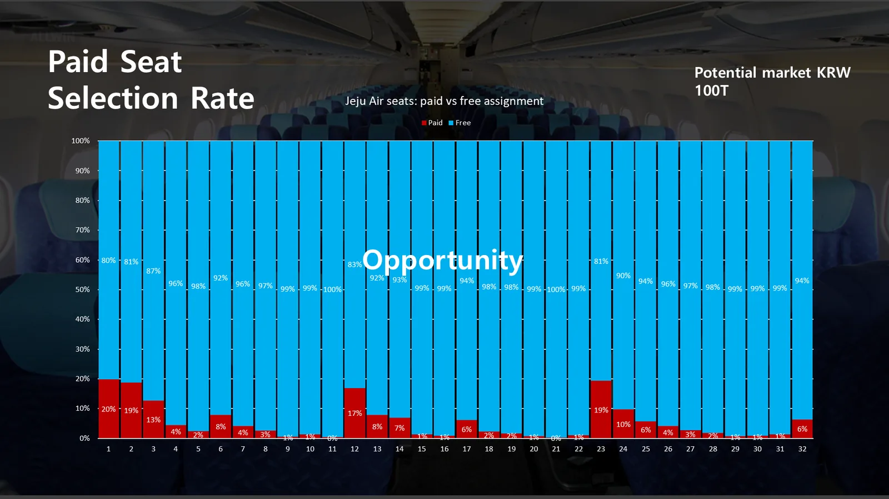
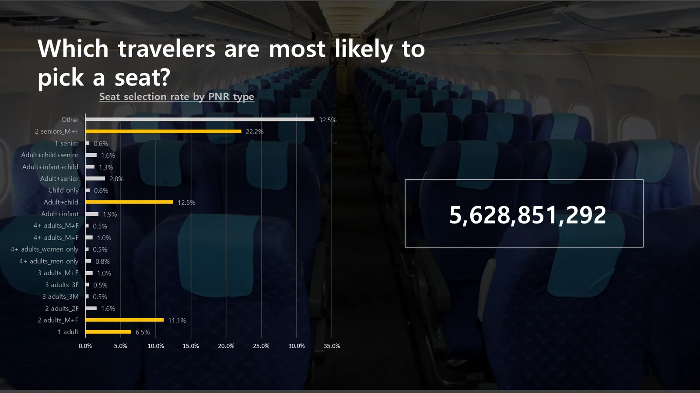
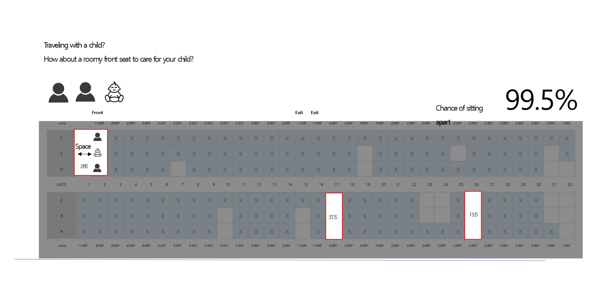
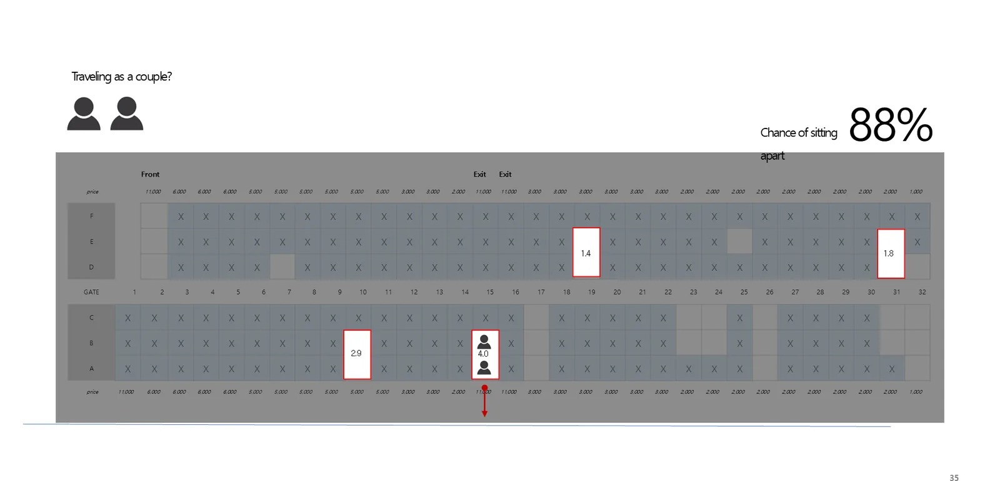
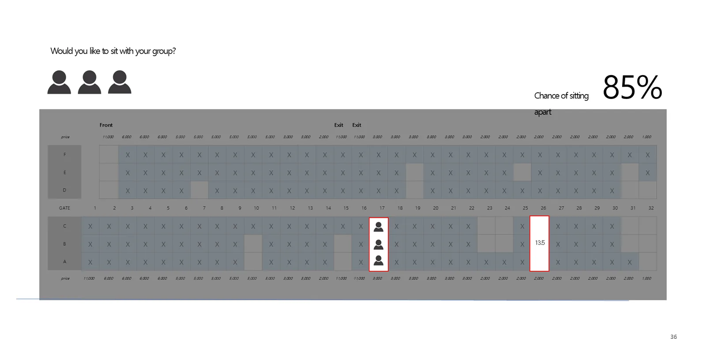
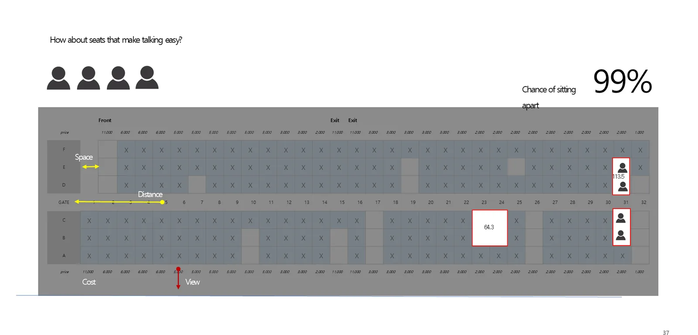
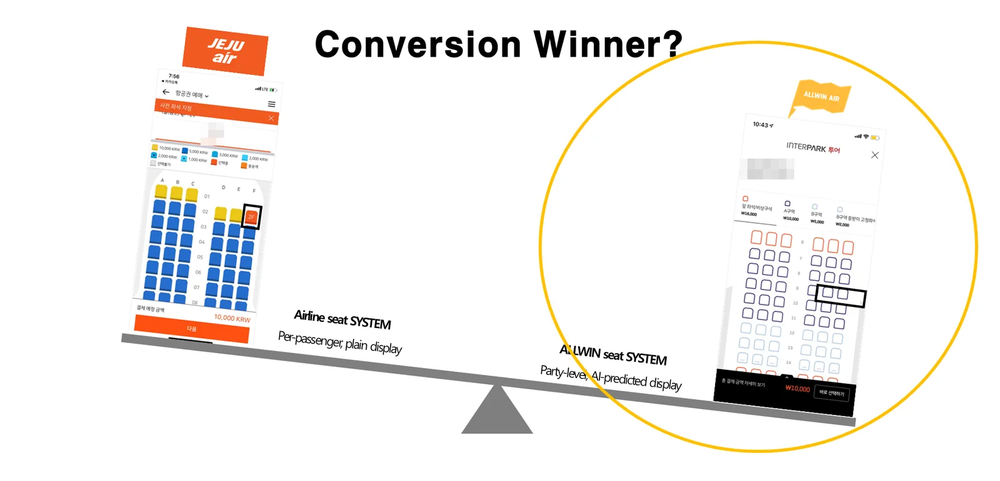

Unsold seats are the market
Most aircraft seats are still assigned for free. Only a few rows such as the front and exit rows sell; the rest mostly stay unsold. Give each seat a reason that matters to the traveler, and these seats become new revenue.


We read the situation from the booking (PNR)
Seat selection rates differ widely by who is in the booking — alone, a couple, with children, with seniors, a group. ALLWIN AIR uses this data to decide which seats to show to whom first.

How we recommend
We show the chance that the party will sit apart without selecting seats, and immediately offer seats that fit.




Why conversion goes up

| Aspect | Typical airline seat selection | ALLWIN AIR seat selection |
|---|---|---|
| Unit | Each passenger | The whole party, from the booking (PNR) |
| Display | Plain seat map | Recommended seats grouped by AI prediction |
| Experience | Search and compare empty seats | Pick a recommendation and pay |
Patents
![PNR-based patented engine diagram 'C.R. (Conversion Rate) Engine'. Aircraft seats (Seat) on the left and duty-free goods (Dutyfree) on the right linked through PNR (Passenger Name Record) companion data. Seats: global potential seat selection market (2019 tickets USD 899B × 10% ≈ USD 90B). Duty-free: Korean duty-free market (KRW 24 trillion in 2019). AGS engine (one-stop buying, even less-preferred seats): aircraft seat pre-purchase method & device (10-2021-0035677), item recommendation method & device (10-2020-0069932), auction method & server (1115802 etc., for seat upgrades). DGS engine (one-stop duty-free for companions within allowance): duty-free pre-order method & device (10-2021-0023742), duty-free display control method & device (10-2021-0057065), item recommendation method & device (10-2020-0069932).](../img/en/slide-53.webp)
![Rational pricing engine for seat upgrades. Left: 'Auction method & server' patents registered in 12 countries including the USA, Japan, Korea, Indonesia, Israel and Singapore (Group Auction, Dynamic Pricing). Right: Group Auction — customers bid between MIN and MAX, top bids win up to the set quantity, all winners pay the lowest winning price, and no one pays more than their bid. Dynamic Pricing — real-time pricing between MIN and MAX like a stock market; high demand raises the price (higher airline margin), low demand lowers it (higher conversion); customers buy instantly without waiting.](../img/en/slide-46.webp)
- Aircraft seat pre-purchase reservation method and device (Korean application 10-2021-0035677)
- Item recommendation method and device (Korean application 10-2020-0069932)
- Auction method and auction server — registered in 12 countries including the US, Japan and Korea (for seat-upgrade pricing)
- Duty-free pre-order method and device (10-2021-0023742), duty-free display control method and device (10-2021-0057065)

Frequently asked questions
- How does AI seat recommendation work?
- It analyzes the booking's (PNR) party composition and itinerary and shows recommended seats first, considering whether the party can sit together and seat attributes such as front, exit, window and aisle. Travelers pick a recommendation or adjust it and pay.
- Is it only for airline seats?
- It is designed to work for any seated booking, including theaters and arenas.
- Is the technology patented?
- Patents have been filed for PNR-based seat pre-purchase, item recommendation and duty-free pre-order, and auction/pricing patents for seat upgrades are registered in 12 countries.
Start integrating with ALLWIN AIR
Airlines and ancillary suppliers, as well as travel agencies, OTAs and travel platforms, can all start with a single integration. We agree on the integration model and schedule to fit each partner.